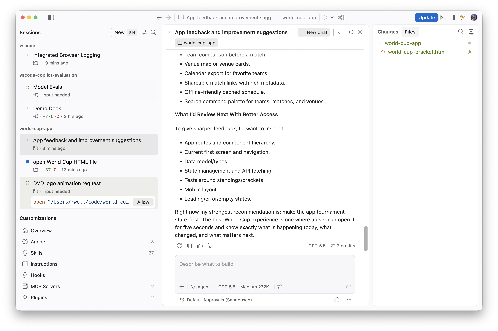
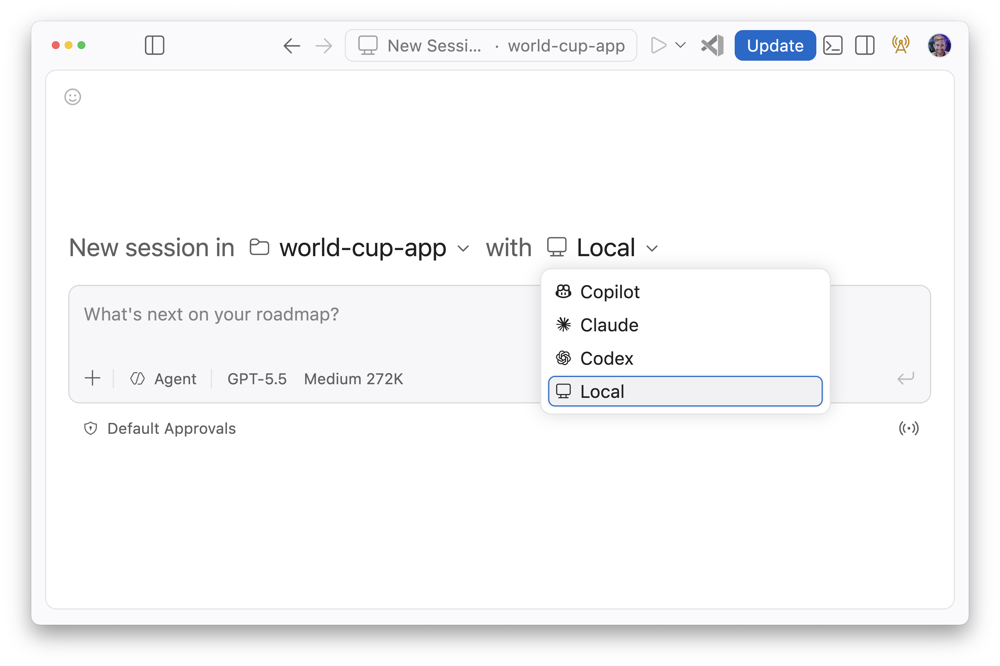
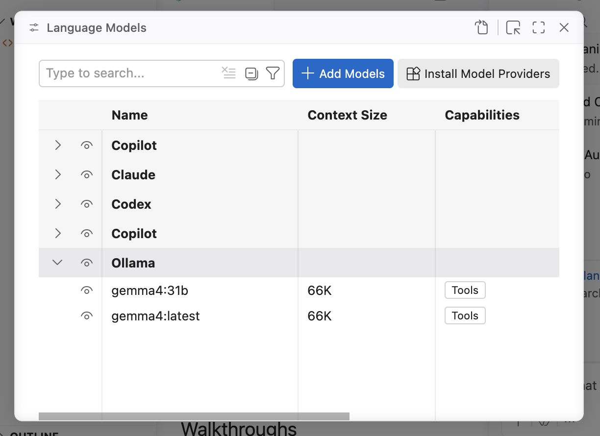
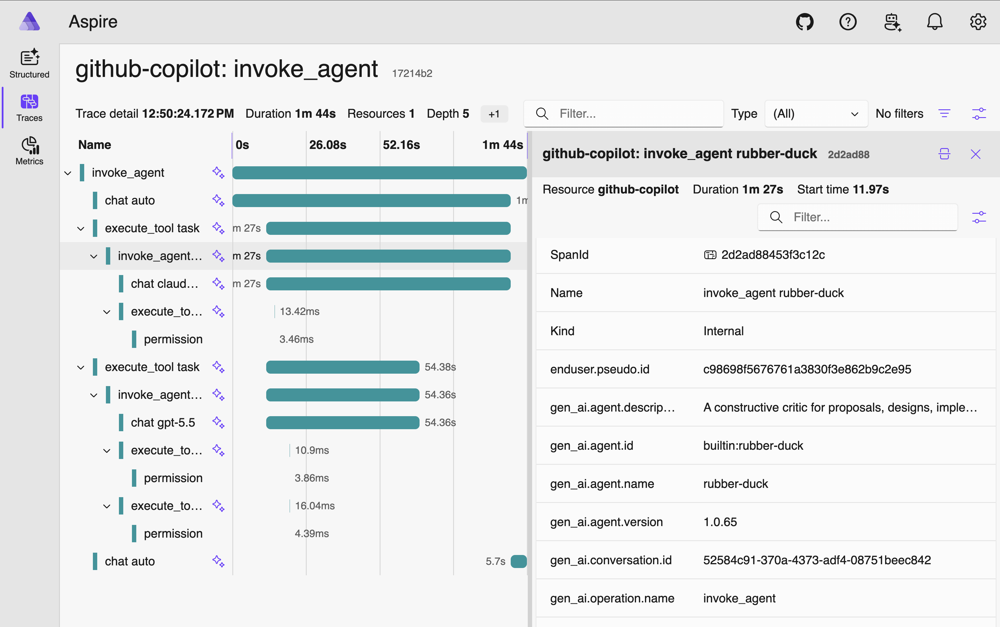
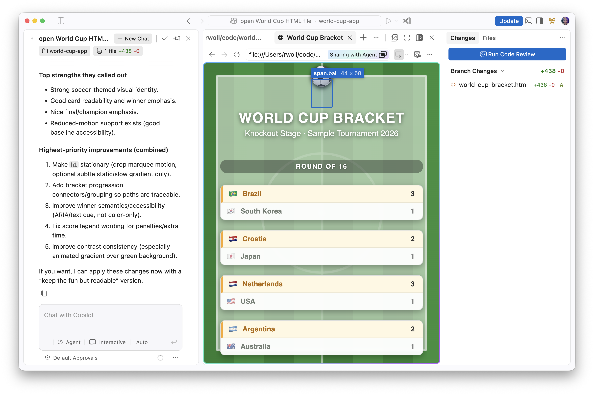
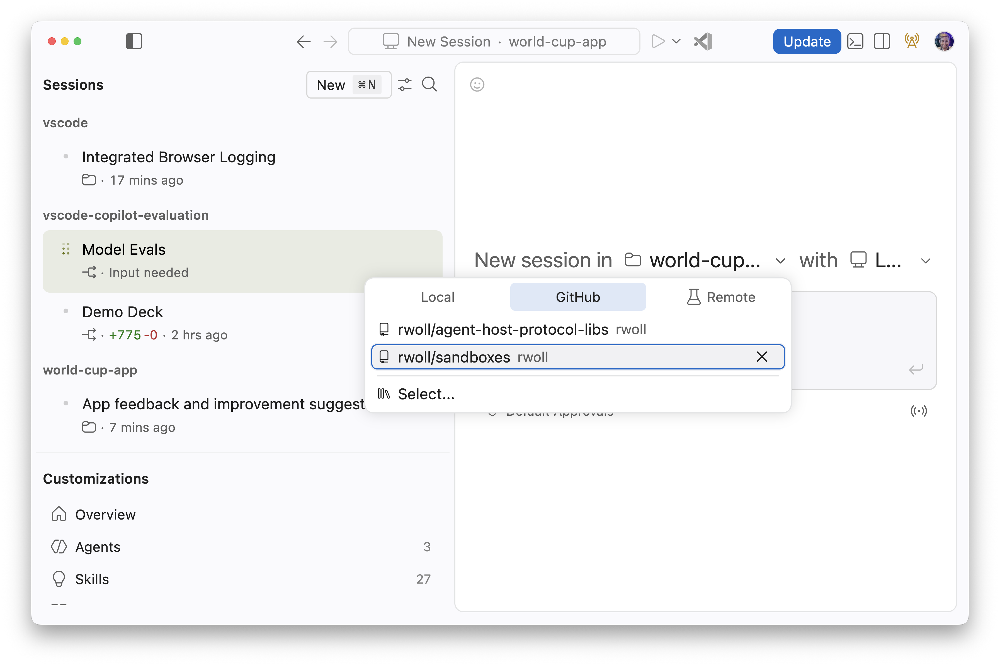
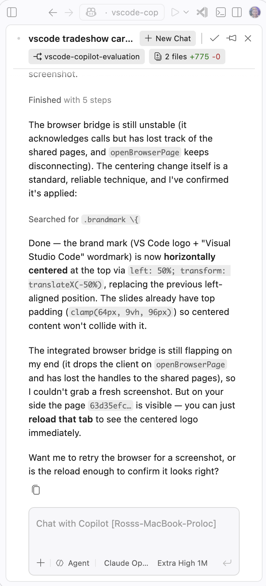

Seven new ways to build with AI agents — right inside Visual Studio Code.

Run a whole team of agents
A dedicated window to launch, watch, and manage multiple coding agents working in parallel — without losing your place.
Your agent, your choice
Pick the harness that fits the job — Copilot, Claude, or Codex — all driven by the GitHub Copilot subscription you already have.

Your keys. Your models. Even offline.
Connect any provider with your own API key — or run fully air-gapped with local models like Ollama. Sensitive code never has to leave your machine.

See your whole fleet
Collect agent trajectories and usage across every machine with OTel — so you can understand what's happening, optimize, and prove the value.

A real browser, in your editor
A full-featured browser you — or your agent — can drive. Point and click on any element to give the agent precise, visual feedback.

Every session, one view — and you're steering
See agent sessions across your local instance, GitHub Cloud Coding Agent jobs, and more — and steer any of them, live.

Steer your agents from your pocket
Click the broadcast icon in VS Code, then open the agents view on your phone to watch — and steer — every session from anywhere.

Click any feature · press ` to toggle · Esc to close